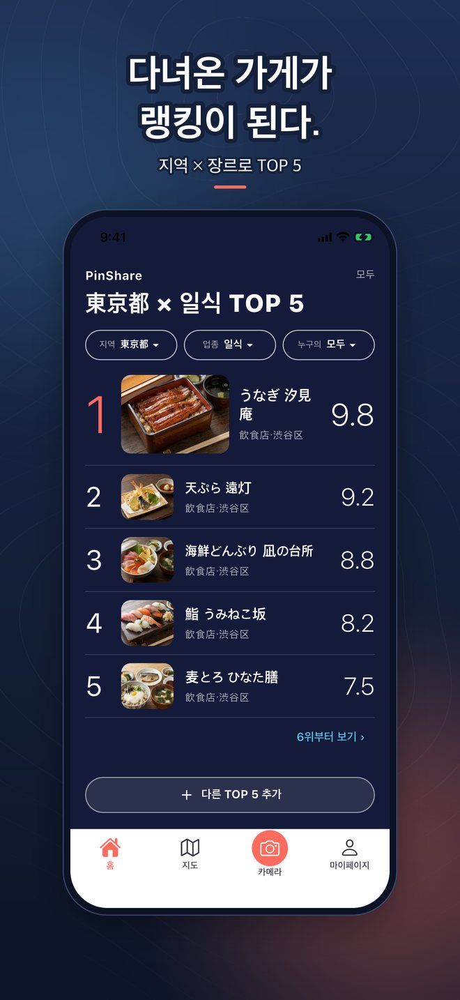
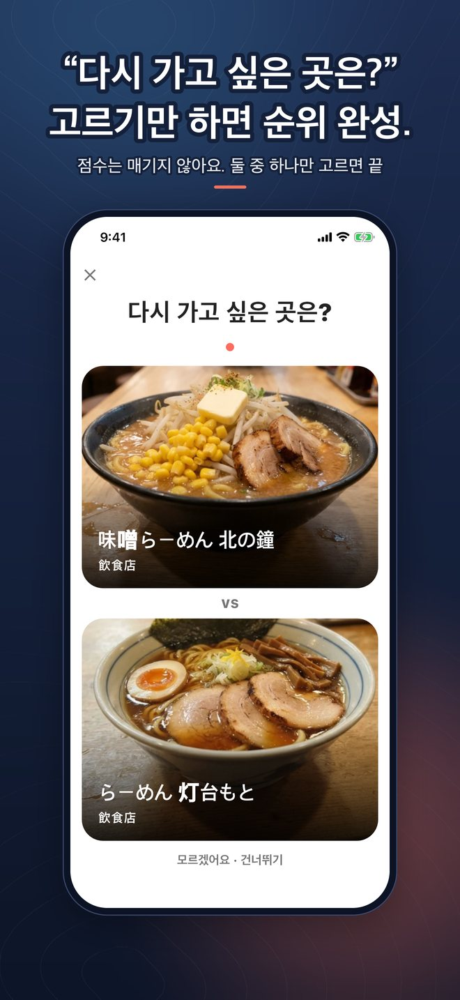
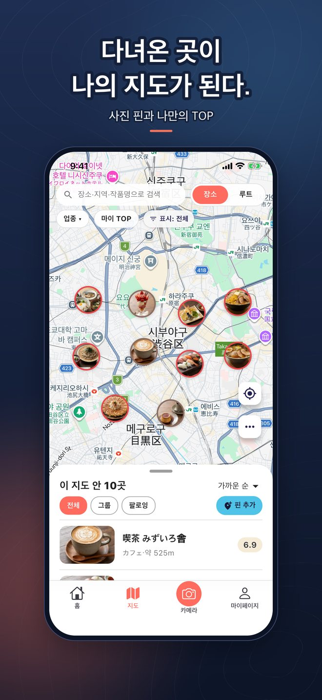
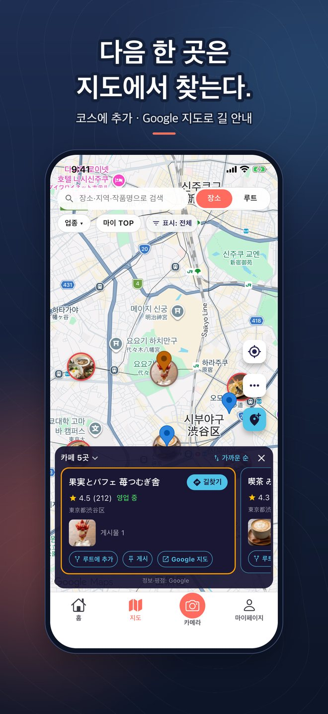
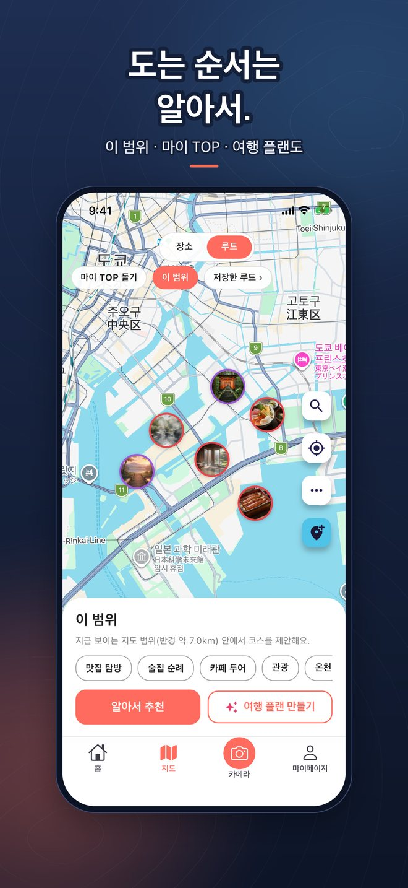
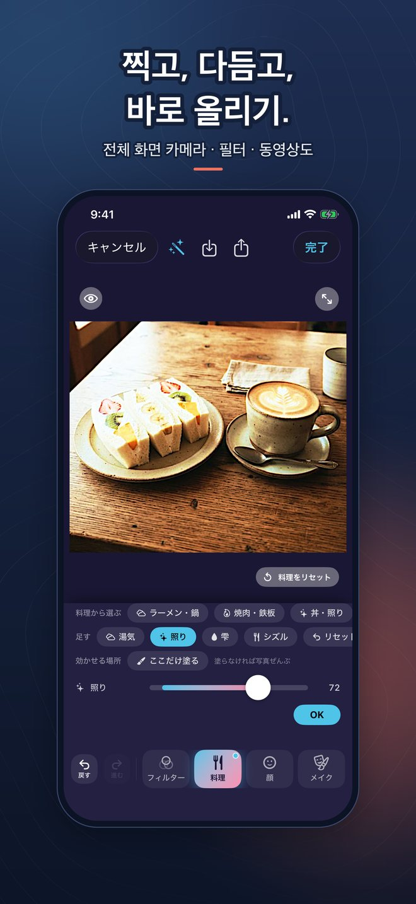

별점으로 고르는 데, 조금 지치지 않았나요?
PinShare는 「내가 또 가고 싶은가」만으로 순위가 정해집니다.
별점 4.5 가게, 너무 많지 않나요
어디를 봐도 높은 점수뿐. 결국 어디가 좋은지 알 수 없어요. 그런 평가 방식은 잠시 내려놓았습니다.
비싼 가게가 위에 오는 랭킹은 이제 지겹다
가격이나 유명세가 아니라, 내가 「또 가고 싶은」 순서. 동네 백반집이 1위여도 괜찮아요.
점수 매기기는 어렵다
3.8과 4.1의 차이는 정할 수 없어요. 하지만 「여기와 저기, 어디에 또 갈래?」라면 바로 답할 수 있습니다.
전부 무료로 볼 수 있어요
랭킹도, 지도도, 코스도 지금은 모두 무료. 가입하면 바로 쓸 수 있습니다.
앱 화면
옆으로 넘겨서 보세요.






할 수 있는 것
비교하고, 남기고, 찾고, 도는 것까지 한 앱에서.
🏆 비교만 하면 랭킹 완성
게시 후 「또 가고 싶은 곳은?」에 답하기만 하면 됩니다. 점수를 고민하지 않아도 순위가 정해집니다.
🥇 홈은 지역 × 장르 TOP 5
지역과 장르를 고르면 TOP 5가 나옵니다. 전체／팔로우 중／그룹／내 랭킹으로 바꿔 볼 수 있습니다.
⚖️ 모두의 랭킹은 1인 1표
점수는 다녀온 사람 각자의 평가를 1인 1표로 평균한 것입니다. 팔로워 수나 게시물 수로 한 표의 무게가 달라지지 않고, 같은 가게에 여러 번 올려도 1표로 셉니다.
📍 다녀온 곳이 나의 지도로
사진 핀으로 다녀온 곳이 지도에 남습니다. 장르로 좁히거나 내 TOP만 볼 수도 있습니다.
🔎 다음 한 곳을 지도에서
지명이나 목적을 입력해 지도 안의 가게를 찾습니다. 찾은 가게는 코스에 추가하고, 길 안내는 Google 지도로.
🗺️ 코스와 여행 플랜
지금 보고 있는 범위에서 도는 순서를 알아서 제안합니다. 목적지와 일수로 여행 플랜도 짤 수 있습니다.
📷 찍고, 다듬고, 바로 올리기
필터를 보면서 찍는 카메라. 글자·스티커 편집, 동영상 컷과 BGM도 앱 안에서.
무료, 1분이면 시작.
App Store에서 「PinShare」를 검색하거나 아래에서.
무료 다운로드App Store · iPhone Google Play에서 다운로드Android게시물 공개 범위는 선택할 수 있어요(기본은 나만). 모든 게시물에 신고·차단·뮤트가 있어요. 사진 보정은 기기 안에서만 처리돼요. 개인정보 처리방침 / 이용약관